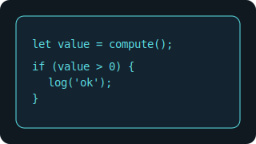
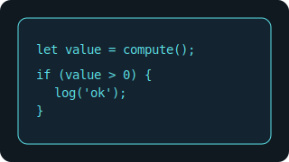

SQL 上手指南
建表与索引、增删改查、连接与聚合、常见误区与练习题等。

基础语法
-- 建表
CREATE TABLE users(id INTEGER PRIMARY KEY, name TEXT NOT NULL, age INT);
-- 查询
SELECT name, age FROM users WHERE age >= 18 ORDER BY age DESC;
-- 连接
SELECT u.name, o.amount FROM users u JOIN orders o ON u.id=o.user_id;
-- 聚合
SELECT COUNT(*) AS cnt, AVG(age) AS avg_age FROM users;
常见坑
- 索引：根据查询模式创建合适索引，避免全表扫描。
- N+1：合理使用连接或聚合，避免重复请求。
- 事务与隔离：关键操作使用事务，理解隔离级别。
练习题
- 设计一个“用户-订单”的数据库，并编写统计查询。
- 为常用查询添加索引并对比性能变化。
- 实现一条分页查询与总量统计的 SQL。
给完全新手：第一步怎么做
- 安装 SQLite 或使用 MySQL/PostgreSQL，确认客户端可连接。
- 创建数据库与表，插入若干行示例数据。
- 编写几条查询与更新语句，理解事务与回滚。
- 添加索引并比较查询性能。
项目实战（入门）
- 用户与订单：设计表结构与关联，编写统计查询。
- 分页与总量：实现分页查询与总量统计。
- 报表生成：导出为 CSV 或可视化图表。
中间插图
 

进阶内容
- 索引策略：覆盖索引、组合索引与选择性。
- 查询优化：合理设计、避免隐式类型转换。
- 事务：规划边界，减少锁争用。
更多练习
- 在电商场景设计订单、仓储与优先级相关的表与查询。
- 对关键查询进行索引与语法优化。
- 实现分区与物化视图，并对多维统计做聚合报表。